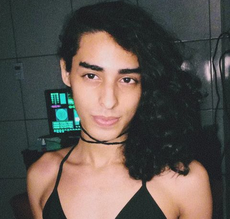
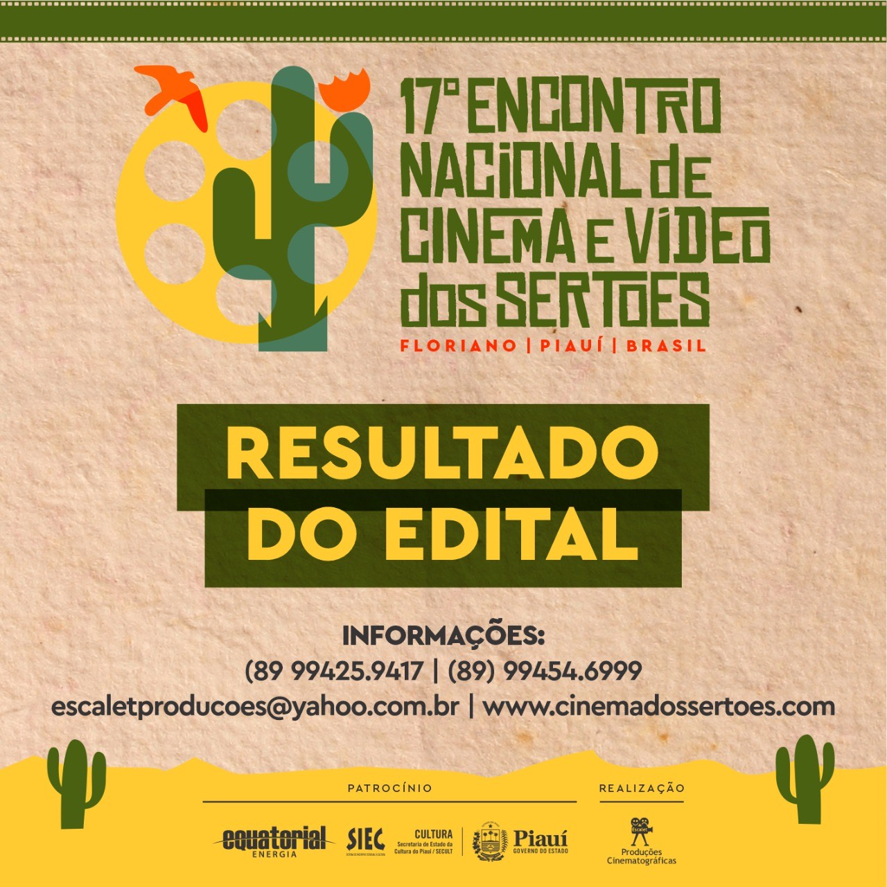
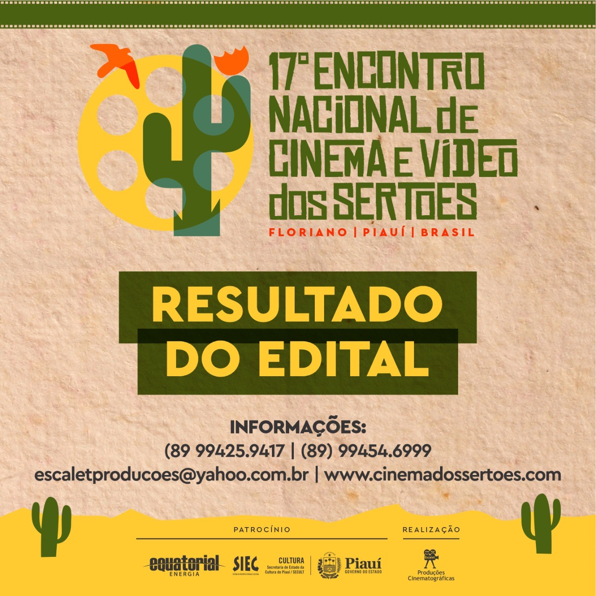
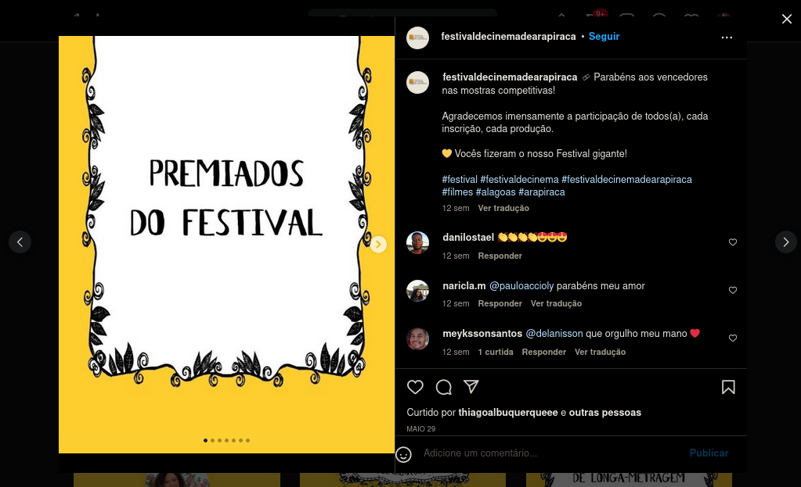
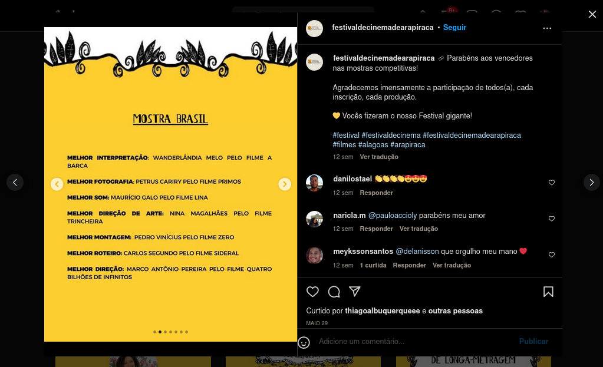
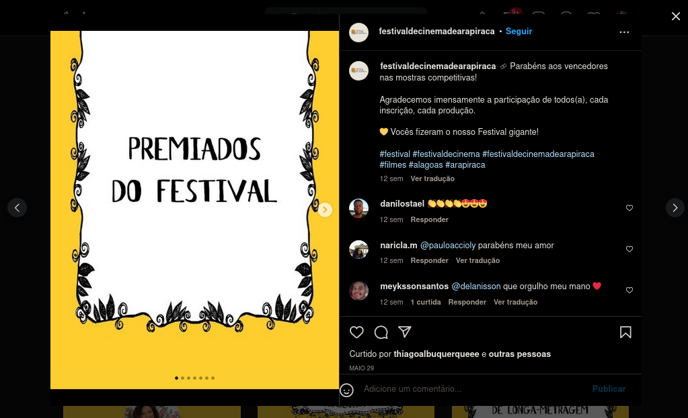
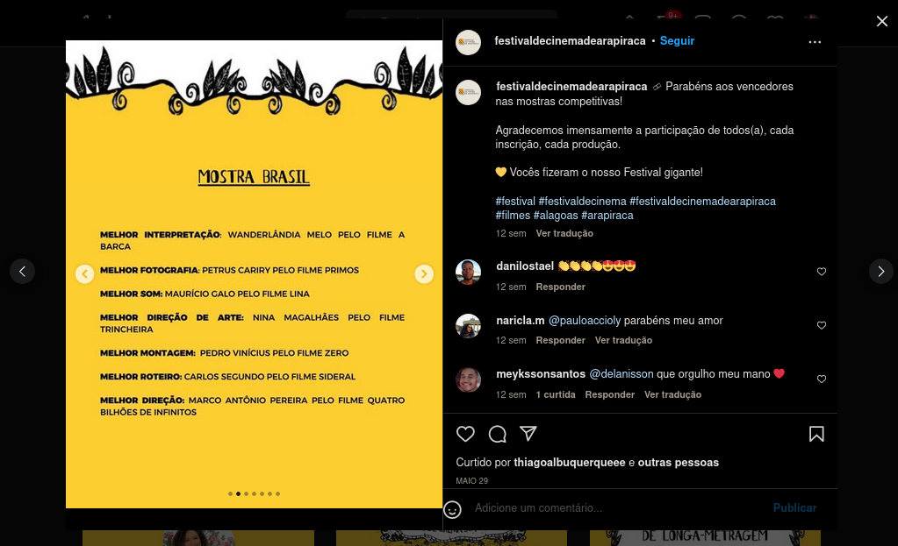
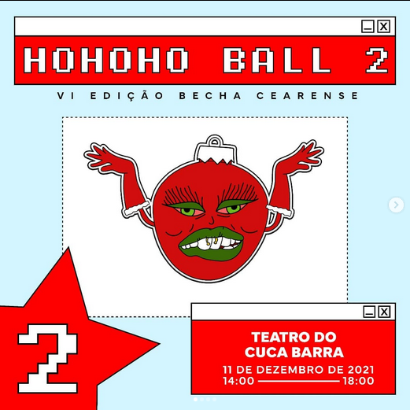
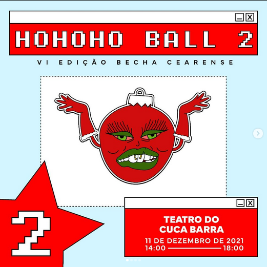

-

Certificados:
android-007 - Ada Roama | Música 06.09.2022
Remix/piano | Ada Roama
android-007 - Ada Roama | SoundCloud

Amanhecer - Ada Roama | Música 04.09.2022
Instrumental | На Заре - Альянс
Remix/voz | Ada Roama
Amanhecer - Ada Roama | SoundCloud

Primos | Curta-metragem | Mostra Brasil | 9º Festival de Cinema de Caruaru | Teatro João Lyra Filho | Agreste Pernambucano 25.08.2022
Atuação no curta-metragem "Primos" lançamento no dia 25 de agosto de 2022 no 9º Festival de Cinema de Caruaru.
Curta-metragem "Primos”, personagens Prodígio e Soberbo são dois primos rivais.
As gravações começaram em agosto de 2018 em Fortaleza.
Ada Roama interpreta personagem Prodígio.
Empresa produtora: Sereia Filmes
Direção: Daniel Pustowka.
Primos | Programação
9º Festival de Cinema de Caruaru: filmes selecionados | CineVitor
9º Festival de Cinema de Caruaru: filmes selecionados | Instagram


Primos | Curta-metragem foi premiado em Fotografia, Montagem, Trilha Musical | Troféu de Cacto de Ouro | 17º Encontro Nacional de Cinema e Vídeo dos Sertões | Piauí 21.08.2022
Atuação no curta-metragem "Primos". O evento, que acontecerá em agosto, na cidade de Floriano (PI), também irá premiar com o troféu “Cacto de Ouro” o melhor filme do Encontro em cada categoria, assim como o melhor Direção, melhor roteiro, melhor figurino, trilha sonora e outras modalidades.
Curta-metragem "Primos”, personagens Prodígio e Soberbo são dois primos rivais.
As gravações começaram em agosto de 2018 em Fortaleza.
Ada Roama interpreta personagem Prodígio.
Empresa produtora: Sereia Filmes
Direção: Daniel Pustowka.
Premiados | 17º Encontro Nacional de Cinema e Vídeo dos Sertões
Primos | Mostra Competitiva | Cinema dos Sertões
Primos | Curta-metragem foi premiado em Melhor Direção de Fotografia Curta-metragem de Petrus Cariry do filme “Primos” | 5º FestCine Pedra Azul | Festival Internacional de Cinema | Espírito Santo 14.08.2022
Atuação no curta-metragem "Primos".
Melhor Direção de Fotografia Curta-metragem de Petrus Cariry do filme “Primos”
Curta-metragem "Primos”, personagens Prodígio e Soberbo são dois primos rivais.
As gravações começaram em agosto de 2018 em Fortaleza.
Ada Roama interpreta personagem Prodígio.
Empresa produtora: Sereia Filmes
Direção: Daniel Pustowka.
5º FestCine Pedra Azul - Cerimônia de Premiação | YOUTUBE
Melhor Direção de Fotografia Curta-metragem, Petrus Cariry do filme “Primos” | Instagram
Las Crias Ball 11.08.2022 - Av. da Universidade, 2064
Perfomance em dança vogue no dia 11 de agosto de 2022 na Las Crias Ball.
LSS @ Las Crias Ball 11.08.2022 | YOUTUBE
Baby Vogue @ Las Crias Ball 11.08.2022 | YOUTUBE


Primos | Curta-metragem | 5º FestCine Pedra Azul | Festival Internacional de Cinema | Espírito Santo 11.08.2022
Atuação no curta-metragem "Primos" lançamento no dia 11 de agosto de 2022 na 5º FestCine Pedra Azul.
Curta-metragem "Primos”, personagens Prodígio e Soberbo são dois primos rivais.
As gravações começaram em agosto de 2018 em Fortaleza.
Ada Roama interpreta personagem Prodígio.
Empresa produtora: Sereia Filmes
Direção: Daniel Pustowka.
5º FestCine Pedra Azul: festival homenageia a atriz Malu Mader | Aqui Notícias
Primos | Sala de Exibição
Programação Oficial das exibições On-line do 5º FestCine Pedra Azul | Instagram


Queima Quengaral 4ª (Edição do Orgulho) – Cuca Barra 05.08.2022
Perfomance em dança vogue e runway no dia 05 de agosto de 2022 na 4ª edição da ball Queima Quengaral no Cuca Barra.
Baby Vogue @ Queima Quengaral 4ª (Edição do Orgulho) – Cuca Barra 05.08.2022 | YOUTUBE
Beginner Runway @ Queima Quengaral 4ª (Edição do Orgulho) – Cuca Barra 05.08.2022 | YOUTUBE


[Primeiro prêmio em Baby Vogue] Mini-ball / treino do Becha Cearense (22.07.2022 – Cuca Barra)
Perfomance em dança vogue e runway no dia 22 de julho de 2022 na Mini-ball do Becha Cearense no Cuca Barra.
Ada Roama foi vencedora na categoria Baby Vogue.
LSS @ Mini-ball / treino do Becha Cearense (22.07.2022 – Cuca Barra) | YOUTUBE
Baby Vogue @ Mini-ball / treino do Becha Cearense (22.07.2022 – Cuca Barra) | YOUTUBE
Runway @ Mini-ball / treino do Becha Cearense (22.07.2022 – Cuca Barra) | YOUTUBE
OTA Performance @ Mini-ball / treino do Becha Cearense (22.07.2022 – Cuca Barra) | YOUTUBE


Primos | Curta-metragem | 17ª CineOP Mostra de Cinema de Ouro Preto | Minas Gerais 25.06.2022
Atuação no curta-metragem "Primos" lançamento no dia 25 de junho de 2022 na 17ª CineOP Mostra de Cinema de Ouro Preto.
Curta-metragem "Primos”, personagens Prodígio e Soberbo são dois primos rivais.
As gravações começaram em agosto de 2018 em Fortaleza.
Ada Roama interpreta personagem Prodígio.
Empresa produtora: Sereia Filmes
Direção: Daniel Pustowka.
17ª Mostra de Cinema de Ouro Preto exibe cinco curtas do Ceará | O Povo
Primos | CineOP
Primos | Divirta-CE


Primos | Curta-metragem indicado em Melhor Filme, Direção, Roteiro, Fotografia, Direção de Arte, Montagem, Trilha Musical e Figurino | Troféu de Cacto de Ouro | 17º Encontro Nacional de Cinema e Vídeo dos Sertões | Piauí 10.06.2022
Atuação no curta-metragem "Primos". O evento, que acontecerá em agosto, na cidade de Floriano (PI), também irá premiar com o troféu “Cacto de Ouro” o melhor filme do Encontro em cada categoria, assim como o melhor Direção, melhor roteiro, melhor figurino, trilha sonora e outras modalidades.
Curta-metragem "Primos”, personagens Prodígio e Soberbo são dois primos rivais.
As gravações começaram em agosto de 2018 em Fortaleza.
Ada Roama interpreta personagem Prodígio.
Empresa produtora: Sereia Filmes
Direção: Daniel Pustowka.
Indicados | 17º Encontro Nacional de Cinema e Vídeo dos Sertões
Primos | Mostra Competitiva | Cinema dos Sertões
 

Primos | Curta-metragem foi premiado em Melhor Fotografia de Petrus Cariry | Mostra Brasil | Festival de Cinema de Arapiraca | Arapiraca Garden Shopping | Alagoas 29.05.2022
Atuação no curta-metragem "Primos" prêmio em Melhor Fotografia de Petrus Cariry no dia 29 de maio de 2022 no Festival de Cinema de Arapiraca.
Curta-metragem "Primos”, personagens Prodígio e Soberbo são dois primos rivais.
As gravações começaram em agosto de 2018 em Fortaleza.
Ada Roama interpreta personagem Prodígio.
Empresa produtora: Sereia Filmes
Direção: Daniel Pustowka.
Premiados do festival | Instagram
 



Primos | Curta-metragem | Mostra Brasil | Festival de Cinema de Arapiraca | Arapiraca Garden Shopping | Alagoas 27.05.2022
Atuação no curta-metragem "Primos" lançamento no dia 27 de maio de 2022 no Festival de Cinema de Arapiraca.
Curta-metragem "Primos”, personagens Prodígio e Soberbo são dois primos rivais.
As gravações começaram em agosto de 2018 em Fortaleza.
Ada Roama interpreta personagem Prodígio.
Empresa produtora: Sereia Filmes
Direção: Daniel Pustowka.
Mostra Brasil | Festival de Cinema de Arapiraca
Arapiraca recebe Festival de Cinema | Taísa Bibi
Programação gratuita, Arapiraca ganha primeiro festival de cinema | Mercatus


Fúria Cunty Ball 17.12.2021
Perfomance em dança vogue no dia 17 de dezembro de 2021 na Fúria Cunty Ball no Porto Iracema das Artes.
LSS + Anúncios @ Fúria Cunty Ball 17.12.2021 | YOUTUBE
Baby Vogue R$ 40 @ Fúria Cunty Ball 17.12.2021 | YOUTUBE

Ho Ho Ho Ball 2 (Becha Cearense Ball 6ª edição) 11.12.2021
Perfomance em dança vogue no dia 11 de dezembro de 2021 na Ho Ho Ho Ball 2 (Becha Cearense Ball 6ª edição) no Cuca Barra.
LSS @ Ho Ho Ho Ball 2 (Becha Cearense Ball 6ª edição) | YOUTUBE


 

Dança expressionista | Marry Wigman | Vídeo performance 28.01.2021
Perfomance em dança expressionista no vídeo divulgado no dia 28 de janeiro de 2021 no Youtube.
Curso online de balé classico e dança moderna pela Rede Cuca.
Professor Joalano Paulino.
Dança expressionista | Marry Wigman | Vídeo performance | YOUTUBE


Beijo | Vídeo performance 25.02.2020
Perfomance em teatro no vídeo divulgado no dia 25 de fevereiro de 2020 no Youtube.
Beijo | Vídeo performance | YOUTUBE

Espetáculo Manifesto Carnavalesco Contemporâneo 30.01.2020
Apresentação no dia 30 de janeiro de 2020 no Theatro José de Alencar (Performance em teatro e dança). O espetáculo Manifesto Carnavalesco Contemporâneo é a montagem do Grupo de Teatro Cuca Barra.
Uma carnavalização manifestada, na luta pelos direitos, em cenas de filmes com o que há de mais humano, um debate entre os clássicos e a vida contemporânea.
Roteiro: Coletivo.
Direção: Michelle Gandolphi.
Espetáculo Manifesto Carnavalesco Contemporâneo | YOUTUBE


Espetáculo Um Natal Nada Convencional 28.11.2019
Apresentação no dia 28 de novembro de 2019 no Cuca Barra (Performance em teatro). O espetáculo Um Natal Nada Convencional é uma adapção de vários filmes para o palco pelo coletivo de alunes de teatro do Cuca Barra.
A Emília do Sitio do Picapáu Amarelo e Dona Hermínia de Minha Mãe é Uma Peça decidem fazer uma ceia de natal, mas mal sabem elas quem serão convidades.
Roteiro: Coletivo.
Direção: Michelle Gandolphi.


Espetáculo Manifesto Carnavalesco 28.11.2019
Apresentação no dia 28 de novembro de 2019 no Theatro José de Alencar (Performance em teatro e dança). O espetáculo Manifesto Carnavalesco Contemporâneo é a montagem do Grupo de Teatro Cuca Barra.
Uma carnavalização manifestada, na luta pelos direitos, em cenas de filmes com o que há de mais humano, um debate entre os clássicos e a vida contemporânea.
Roteiro: Coletivo.
Direção: Michelle Gandolphi.
Espetáculo Manifesto Carnavalesco Contemporâneo | YOUTUBE


Espetáculo Um Natal Nada Convencional | Encontro das Artes 26.11.2019
Apresentação no dia 26 de novembro de 2019 no Cuca Mondubim (Performance em teatro e dança).
O espetáculo Um Natal Nada Convencional é uma adapição de vários filmes para o palco pelo coletivo de alunes de teatro do Cuca Barra.
A Emília do Sitio do Pica-pau Amarelo e Dona Hermínia de Minha Mãe é Uma Peça decidem fazer uma ceia de natal, mas mal sabem elas quem serão convidades.
Roteiro: Coletivo.
Direção: Michelle Gandolphi.


Espetáculo Manifesto Carnavalesco | XXIII Mostra de Teatro do Estudante | Vila das Artes 26.10.2019
Apresentação no dia 26 de outubro de 2019 no Vila das Artes (Performance em teatro e dança).
O espetáculo Manifesto Carnavalesco Contemporâneo é a montagem do Grupo de Teatro Cuca Barra.
Uma carnavalização manifestada, na luta pelos direitos, em cenas de filmes com o que há de mais humano, um debate entre os clássicos e a vida contemporânea.
Roteiro: Coletivo.
Direção: Michelle Gandolphi.
Espetáculo Manifesto Carnavalesco Contemporâneo | YOUTUBE


Espetáculo Manifesto Carnavalesco | XXIII Mostra de Teatro do Estudante | Theatro José de Alencar 17.10.2019
Apresentação no dia 17 de outubro de 2019 no Theatro José de Alencar (Performance em teatro e dança).
O espetáculo Manifesto Carnavalesco Contemporâneo é a montagem do Grupo de Teatro Cuca Barra.
Uma carnavalização manifestada, na luta pelos direitos, em cenas de filmes com o que há de mais humano, um debate entre os clássicos e a vida contemporânea.
Roteiro: Coletivo.
Direção: Michelle Gandolphi.
Espetáculo Manifesto Carnavalesco Contemporâneo | YOUTUBE


Balé Contemporâneo | Encontro das Artes | Cuca Barra 28.06.2019
Apresentação no dia 26 de junho de 2019 no Encontro das Artes - Releituras do Cinema no Cuca Barra (Performance em balé Contemporâneo).
Coreógrafo/professor: Joalano Paulino.
Balé Contemporâneo | Encontro das Artes | YOUTUBE


Espetáculo Estribilho | BNB Fortaleza 25 e 26.01.2018
Apresentação nos dias 25 e 26 de janeiro de 2018 no BNB Fortaleza (Performance em teatro e canto).
O espetáculo Estribilho é a montagem de conclusão do Curso Princípios Básicos de Teatro, turma Manhã 2016/2017.
Trazendo ao palco uma reflexão ácida e poética sobre a opressão na sociedade contemporânea, o espetáculo, repleto de música, embarca num trem circense, construindo um trilho no horizonte para discutir a dor e o sabor nas relações humanas.
Direção: Juliana Veras.
Espetáculo Estribilho | YOUTUBE


Espetáculo Estribilho | CCBJ 25 e 26.01.2018
Apresentação no dia 24 de janeiro de 2018 no CCBJ (Performance em teatro e canto).
O espetáculo Estribilho é a montagem de conclusão do Curso Princípios Básicos de Teatro, turma Manhã 2016/2017.
Trazendo ao palco uma reflexão ácida e poética sobre a opressão na sociedade contemporânea, o espetáculo, repleto de música, embarca num trem circense, construindo um trilho no horizonte para discutir a dor e o sabor nas relações humanas.
Direção: Juliana Veras.
Espetáculo Estribilho | YOUTUBE


CD Trilhos Sonoros | Mostra CPBT Montagens | Theatro José de Alencar 21.01.2018
Apresentação no dia 21 de janeiro de 2018 no Theatro José de Alencar (Performance em teatro e canto).
O projeto Trilhos sonoros é uma construção da banda musical de artistas que compõe o espetáculo Estribilho.
Direção: grupo Constance e espetáculo Estribilho.


CD Trilhos Sonoros | Mostra CPBT Montagens | Theatro José de Alencar 17.01.2018
Apresentação no dia 17 de janeiro de 2018 no Theatro José de Alencar (Performance em teatro e canto).
O projeto Trilhos sonoros é uma construção da banda musical de artistas que compõe o espetáculo Estribilho.
Direção: grupo Constance e espetáculo Estribilho.
I Mostra do Curso Princípios Básicos de Teatro reúne montagens de alunos do TJA | Blog do Lauriberto


Espetáculo Estribilho | Mostra CPBT Montagens | Theatro José de Alencar 16.01.2018
Apresentação no dia 16 de janeiro de 2018 no Theatro José de Alencar (Performance em teatro e canto).
O espetáculo Estribilho é a montagem de conclusão do Curso Princípios Básicos de Teatro, turma Manhã 2016/2017.
Trazendo ao palco uma reflexão ácida e poética sobre a opressão na sociedade contemporânea, o espetáculo, repleto de música, embarca num trem circense, construindo um trilho no horizonte para discutir a dor e o sabor nas relações humanas.
Direção: Juliana Veras.
I Mostra do Curso Princípios Básicos de Teatro reúne montagens de alunos do TJA | Blog do Lauriberto
Espetáculo Estribilho | YOUTUBE


Espetáculo Estribilho | Primeiro ato | Cuca Jangurussu 25.11.2017
Apresentação no dia 25 de novembro de 2017 no Cuca Jangurussu (Performance em teatro e canto).
O espetáculo Estribilho é a montagem de conclusão do Curso Princípios Básicos de Teatro, turma Manhã 2016/2017.
Trazendo ao palco uma reflexão ácida e poética sobre a opressão na sociedade contemporânea, o espetáculo, repleto de música, embarca num trem circense, construindo um trilho no horizonte para discutir a dor e o sabor nas relações humanas.
Direção: Juliana Veras.
Espetáculo Estribilho | YOUTUBE

Espetáculo Estribilho | Apresentação aberta | Theatro José de Alencar 10.11.2017
Apresentação no dia 10 de novembro de 2017 no Theatro José de Alencar (Performance em teatro e canto).
O espetáculo Estribilho é a montagem de conclusão do Curso Princípios Básicos de Teatro, turma Manhã 2016/2017.
Trazendo ao palco uma reflexão ácida e poética sobre a opressão na sociedade contemporânea, o espetáculo, repleto de música, embarca num trem circense, construindo um trilho no horizonte para discutir a dor e o sabor nas relações humanas.
Direção: Juliana Veras.
Espetáculo Estribilho | Maria Cláudia Costa
Espetáculo Estribilho | YOUTUBE


Espetáculo Estribilho | 24° Festival de teatro de Guaramiranga 05.09.2017
Apresentação no dia 05 de setembro de 2017 em Guaramiranga (Performance em teatro e canto).
O espetáculo Estribilho é a montagem de conclusão do Curso Princípios Básicos de Teatro, turma Manhã 2016/2017.
Trazendo ao palco uma reflexão ácida e poética sobre a opressão na sociedade contemporânea, o espetáculo, repleto de música, embarca num trem circense, construindo um trilho no horizonte para discutir a dor e o sabor nas relações humanas.
Direção: Juliana Veras.
Festival de Teatro de Guaramiranga divulga programação | APRECE
24º Festival Nordestino de Teatro de Guaramiranga | Guia Guaramiranga
Espetáculo Estribilho | YOUTUBE


Espetáculo Estribilho | Estreia | Theatro José de Alencar 20, 19 e 18.08.2017
Apresentação estreia nos dias 20, 19 e 18 de agosto de 2017 no Theatro José de Alencar (Performance em teatro e canto).
O espetáculo Estribilho é a montagem de conclusão do Curso Princípios Básicos de Teatro, turma Manhã 2016/2017.
Trazendo ao palco uma reflexão ácida e poética sobre a opressão na sociedade contemporânea, o espetáculo, repleto de música, embarca num trem circense, construindo um trilho no horizonte para discutir a dor e o sabor nas relações humanas.
Direção: Juliana Veras.
Com magia circense, peça Estribilho discute opressões | Vida & Arte | O Povo
Opressão nas relações humanas é tema do espetáculo "Estribilho" | Shows e Espetáculos | O Povo
TJA: programação da semana é marcada por apresentações gratuitas, nesta quinta, 17/8, em alusão ao aniversário do Theatro | Investe CE por Oswaldo Scaliotti
Espetáculo Estribilho | YOUTUBE


Esquete teatral O Inspetor Geral | Grupo CPBT | Theatro José de Alencar 02.06.2017
Apresentação no dia 2 de junho de 2017 no Theatro José de Alencar (Performance em teatro).
O Inspector Geral de Nikolai Gogol publicado em 1836 é uma peça de teatro que aborda a realidade de uma aldeia que descobre que será alvo da visita de um Inspector Geral, anunciada por carta a um presidente da câmara "modelo de populismo, corrupção e ridículo".
Ada Roama interpretou o juiz da Comarca.
Direção: grupo CPBT.


Coral “Oh Happy Day” | Projeto Integração | Cuca Mondubim 05.09.2015
Apresentação estreia no dia 5 de setembro de 2015 no Cuca Mondubim (Performance em canto).
O Projeto Integração da Rede Cuca ofereceu oportunidades na arte musical para alunes do 9º ano da EMEIF Escola Municipal Antonio Correia Lima.
O coral com toda vibração canta a música “Oh Happy Day” de Edwin Hawkins.
Direção: Vera Barros Dantas.

Teatro corporal | Projeto Integração | Cuca Mondubim 05.09.2015
Apresentação estreia no dia 5 de setembro de 2015 no Cuca Mondubim (Performance em teatro).
O Projeto Integração da Rede Cuca ofereceu oportunidades na arte teatral para alunes do 9º ano da EMEIF Escola Municipal Antonio Correia Lima.
O espetáculo usa bastões de vassoura junto com movimentos coreografadas e a sintonia entre os corpos em cena.
Direção: Roberta Bernardo.


Teatro católico | Santuário Nossa Senhora da Assunção 09.08.2015
Apresentação no dia 09 de agosto de 2015 no Santuário Nossa Senhora da Assunção [Av. Dom Aloísio Lorscheider, 960 - Vila Velha, Fortaleza] (Performance em teatro).
Peça teatral que traz a dor e a salvação do ser humano na base cristã.
Direção: Grupo de Teatro da Igreja Nossa Senhora de Fátima [R. 03, 283 - Conj. Hermes Pereira, Fortaleza - CE].

Teatro espírita | Lar de Clara 08.03.2015
Apresentação no dia 08 de março de 2015 no Lar de Clara [R. Ubaldo Sólon, s/n - Guaié, Caucaia - CE, 61600-000] (Performance em teatro).
Peça teatral que traz a dor e a salvação do ser humano na base cristã.
Direção: Grupo de Teatro do Lar de Clara.

[3º lugar em runway] Desfile na semana cultural | 8º ano | Escola Municipal Antônio Correia Lima 28.11.2014
Desfile no dia 28 de novembro de 2014 na Escola Municipal Antônio Correia Lima.
3º lugar em runway.
Direção: alunes do 8º ano.
Runway @ Semana cultural | 8º ano | Escola Municipal Antônio Correia Lima 28.11.2014 | YOUTUBE


Dança | Semana cultural | 8º ano | Escola Municipal Antônio Correia Lima 27.11.2014
Dança no dia 27 de novembro de 2014 na Escola Municipal Antônio Correia Lima.
Direção: alunes do 8º ano.
Dança | Semana cultural | 8º ano | Escola Municipal Antônio Correia Lima 27.11.2014 | YOUTUBE


Teatro indígena | Semana cultural | 7º ano | Colégio Vinicius de Moraes 22.05.2013
Teatro indígena no dia 22 de maio de 2013 no Colégio Vinicius de Moraes.
Tupã não era exatamente um deus, mas sim uma manifestação de um deus na forma do som do trovão.
Ada Roama interpreta Tupã.
Direção: alunes do 7º ano.

Teatro e dança junina | 6º ano | Colégio Vinicius de Moraes 22.06.2012
Teatro e dança junina no dia 22 de junho de 2012 no Colégio Vinicius de Moraes.
Ada Roama interpreta padre do casamento.
Direção: alunes do 6º ano.


Dança árabe | Semana cultural | 6º ano | Colégio Vinicius de Moraes 25.05.2012
Dança árabe no dia 25 de maio de 2012 no Colégio Vinicius de Moraes.
Direção: alunes do 6º ano.